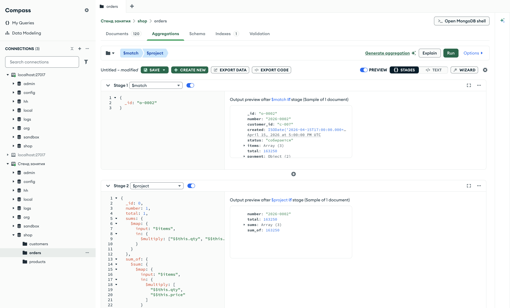

Справочник по MongoDB · модуль 5 · выражения над массивами
5.3
$map: преобразование
каждого элемента
$map применяет одно выражение к каждому элементу массива и возвращает новый массив той же длины. В главе разобраны суммы позиций заказа и проверка поля total по ним, новые документы и строки из элементов, выражения $sum, $max, $min и $avg над массивом и связка $filter и $map. Отдельно показано, чем $sum в $project отличается от $sum в $group.
- Категория
- Агрегация
- Уровень
- Начальный
- Связанные темы
- $filter (глава 5.2), $size (глава 5.1), $multiply, $concat и $toString (глава 4.2), аккумуляторы $sum, $avg, $min, $max (глава 4.4), $unwind (глава 4.6)
- Зачем это знать
- Пересчитывать элементы массива — суммы позиций, подписи складов — и получать по ним итоги внутри документа, не разворачивая массив
Как запускать примеры этой главы
mongodb-glava-5.3-python.zip, 61 КБmongodb-glava-5.3-ruby.zip, 61 КБmongodb-glava-5.3-go.zip, 66 КБmongodb-glava-5.3-cpp.zip, 64 КБ — все примеры главы готовыми программами, базы и стенд в Docker. В README.md — запуск в Docker, если Compass нет или он не подключается, и на установленном сервере с Compass, а также что должна напечатать каждая программа.lessons/ch5_3.py — пример вставляется в конец файлаlessons/ch5_3.rb — пример вставляется в конец файлаlessons/ch5_3.go — пример внутрь скобок в конце main, функции и типы — выше mainlessons/ch5_3.cpp — пример внутрь скобок в конце main, функции — выше maincd lessons, затем python ch5_3.pycd lessons, затем python3 ch5_3.py · в Docker: docker compose run --rm python lessons/ch5_3.pycd lessons, затем ruby ch5_3.rb · в Docker: docker compose run --rm ruby lessons/ch5_3.rbcd lessons, затем go run ch5_3.go · в Docker: docker compose run --rm go lessons/ch5_3.gocd lessons, затем g++ -std=c++17 ch5_3.cpp -o prog $(pkg-config --cflags --libs libmongocxx1) && ./prog · в Docker: docker compose run --rm cpp lessons/ch5_3.cpp§1Выражение $map
Бухгалтер получает накладную и в каждой строке дописывает сумму: количество умножить на цену. Строк в накладной столько же, сколько было, — у каждой появилось новое значение.
Выражение $map вычисляет одно и то же выражение для каждого элемента массива и возвращает массив результатов. Элементы обрабатываются по порядку, поэтому в новом массиве столько же элементов, сколько во входном, и результат первого элемента стоит первым. Запись:
{"$map": {"input": массив, "as": "имя", "in": выражение}}
input и as устроены так же, как у $filter из главы 5.2: массив и имя текущего элемента, по умолчанию $$this. in — выражение, значение которого станет элементом нового массива. Разница с $filter одна: $filter по условию решает, оставить ли элемент; $map ничего не отбрасывает, а заменяет каждый элемент значением in.
Пример для заказа 2026-0002 вычисляет сумму каждой позиции — qty × price — и складывает суммы выражением $sum.
pipeline = [
{"$match": {"_id": "o-0002"}},
{"$project": {
"_id": 0,
"number": 1,
"total": 1,
"sums": {"$map": {
"input": "$items",
"in": {"$multiply": ["$$this.qty", "$$this.price"]},
}},
"sum_of": {"$sum": {"$map": {
"input": "$items",
"in": {"$multiply": ["$$this.qty", "$$this.price"]},
}}},
}},
]
for doc in orders.aggregate(pipeline):
print(doc)
mongocxx::pipeline pipeline; pipeline.match(make_document(kvp("_id", "o-0002"))); pipeline.project(make_document( kvp("_id", 0), kvp("number", 1), kvp("total", 1), kvp("sums", make_document( kvp("$map", make_document( kvp("input", "$items"), kvp("in", make_document(kvp("$multiply", make_array("$$this.qty", "$$this.price")))))))), kvp("sum_of", make_document( kvp("$sum", make_document( kvp("$map", make_document( kvp("input", "$items"), kvp("in", make_document(kvp("$multiply", make_array("$$this.qty", "$$this.price")))))))))))); for (auto&& doc : orders.aggregate(pipeline)) { std::cout << bsoncxx::to_json(doc, bsoncxx::ExtendedJsonMode::k_relaxed) << std::endl; }
pipeline := mongo.Pipeline{
{{Key: "$match", Value: bson.D{{Key: "_id", Value: "o-0002"}}}},
{{Key: "$project", Value: bson.D{
{Key: "_id", Value: 0},
{Key: "number", Value: 1},
{Key: "total", Value: 1},
{Key: "sums", Value: bson.D{
{Key: "$map", Value: bson.D{
{Key: "input", Value: "$items"},
{Key: "in", Value: bson.D{
{Key: "$multiply", Value: bson.A{"$$this.qty", "$$this.price"}}}}}}}},
{Key: "sum_of", Value: bson.D{
{Key: "$sum", Value: bson.D{
{Key: "$map", Value: bson.D{
{Key: "input", Value: "$items"},
{Key: "in", Value: bson.D{
{Key: "$multiply", Value: bson.A{"$$this.qty", "$$this.price"}}}}}}}}}}}}},
}
cursor, _ := orders.Aggregate(ctx, pipeline)
for cursor.Next(ctx) {
var doc bson.D
cursor.Decode(&doc)
out, _ := bson.MarshalExtJSON(doc, false, false)
fmt.Println(string(out))
}
pipeline = [
{ "$match" => { "_id" => "o-0002" } },
{ "$project" => {
"_id" => 0,
"number" => 1,
"total" => 1,
"sums" => { "$map" => {
"input" => "$items",
"in" => { "$multiply" => ["$$this.qty", "$$this.price"] },
} },
"sum_of" => { "$sum" => { "$map" => {
"input" => "$items",
"in" => { "$multiply" => ["$$this.qty", "$$this.price"] },
} } },
} },
]
orders.aggregate(pipeline).each { |doc| puts doc.inspect }
{'number': '2026-0002', 'total': 163250, 'sums': [51490, 6790, 104970], 'sum_of': 163250}
{ "number" : "2026-0002", "total" : 163250, "sums" : [ 51490, 6790, 104970 ], "sum_of" : 163250 }
{"number":"2026-0002","total":163250,"sums":[51490,6790,104970],"sum_of":163250}
{"number"=>"2026-0002", "total"=>163250, "sums"=>[51490, 6790, 104970], "sum_of"=>163250}
В sums три числа — по одному на позицию: 51 490 за один ноутбук, 6 790 за одну веб-камеру, 104 970 за трое наушников. sum_of равно 163 250, как и total заказа.
| $$this.title | $$this.qty | $$this.price | in: qty × price |
|---|---|---|---|
| Ноутбук ASUS VivoBook 15 | 1 | 51490 | 51490 |
| Веб-камера Logitech C920 | 1 | 6790 | 6790 |
| Наушники Sony WH-1000XM5 | 3 | 34990 | 104970 |
| $sum элементов sums | 163250 | ||
Каждая строка — один шаг $map: $$this принимает значение очередного элемента, in вычисляется заново. Последняя строка — $sum над готовым массивом.
$sum здесь записан в стадии $project, а не в $group, и получает массив. В такой форме он складывает элементы массива одного документа. Аккумулятор $sum из главы 4.4 в стадии $group складывает значения из разных документов группы. Запись одинаковая, результат решает стадия.
§2Сходится ли total с позициями
Итог заказа хранится в поле total, а позиции — в items. Если одно поле обновили, а другое нет, итог перестанет совпадать с позициями. Пример проверяет все 120 заказов: сравнивает total с суммой позиций и группирует заказы по результату сравнения.
pipeline = [
{"$project": {"matches": {"$eq": [
"$total",
{"$sum": {"$map": {
"input": "$items",
"in": {"$multiply": ["$$this.qty", "$$this.price"]},
}}},
]}}},
{"$group": {"_id": "$matches", "orders": {"$sum": 1}}},
]
for doc in orders.aggregate(pipeline):
print(doc)
mongocxx::pipeline pipeline; pipeline.project(make_document( kvp("matches", make_document( kvp("$eq", make_array( "$total", make_document( kvp("$sum", make_document( kvp("$map", make_document( kvp("input", "$items"), kvp("in", make_document( kvp("$multiply", make_array("$$this.qty", "$$this.price"))))))))))))))); pipeline.group(make_document(kvp("_id", "$matches"), kvp("orders", make_document(kvp("$sum", 1))))); for (auto&& doc : orders.aggregate(pipeline)) { std::cout << bsoncxx::to_json(doc, bsoncxx::ExtendedJsonMode::k_relaxed) << std::endl; }
pipeline := mongo.Pipeline{
{{Key: "$project", Value: bson.D{
{Key: "matches", Value: bson.D{
{Key: "$eq", Value: bson.A{
"$total",
bson.D{
{Key: "$sum", Value: bson.D{
{Key: "$map", Value: bson.D{
{Key: "input", Value: "$items"},
{Key: "in", Value: bson.D{
{Key: "$multiply", Value: bson.A{"$$this.qty", "$$this.price"}}}}}}}}}}}}}}}},
{{Key: "$group", Value: bson.D{
{Key: "_id", Value: "$matches"},
{Key: "orders", Value: bson.D{{Key: "$sum", Value: 1}}}}}},
}
cursor, _ := orders.Aggregate(ctx, pipeline)
for cursor.Next(ctx) {
var doc bson.D
cursor.Decode(&doc)
out, _ := bson.MarshalExtJSON(doc, false, false)
fmt.Println(string(out))
}
pipeline = [
{ "$project" => { "matches" => { "$eq" => [
"$total",
{ "$sum" => { "$map" => {
"input" => "$items",
"in" => { "$multiply" => ["$$this.qty", "$$this.price"] },
} } },
] } } },
{ "$group" => { "_id" => "$matches", "orders" => { "$sum" => 1 } } },
]
orders.aggregate(pipeline).each { |doc| puts doc.inspect }
{'_id': True, 'orders': 120}
{ "_id" : true, "orders" : 120 }
{"_id":true,"orders":120}
{"_id"=>true, "orders"=>120}
Группа одна — true, в ней 120 заказов: у каждого заказа total равен сумме позиций. Группы false нет, расхождений нет. Если бы расхождения были, эта же проверка с $match по matches: false вывела бы номера таких заказов.
В главе 4.6 сумма позиций считалась через $unwind и $group по всем заказам сразу. С $map и $sum сумма получается у каждого заказа отдельно, и её можно сравнить с полем того же заказа.
§3Новый документ из элемента
Выражение in может собрать документ — так же, как $project собирает документ из полей. Пример превращает каждую позицию заказа 2026-0002 в документ из двух полей: названия и суммы. Элемент назван через as именем line.
pipeline = [
{"$match": {"_id": "o-0002"}},
{"$project": {
"_id": 0,
"number": 1,
"lines": {"$map": {
"input": "$items",
"as": "line",
"in": {
"title": "$$line.title",
"sum": {"$multiply": ["$$line.qty", "$$line.price"]},
},
}},
}},
]
for doc in orders.aggregate(pipeline):
print(doc)
mongocxx::pipeline pipeline; pipeline.match(make_document(kvp("_id", "o-0002"))); pipeline.project(make_document( kvp("_id", 0), kvp("number", 1), kvp("lines", make_document( kvp("$map", make_document( kvp("input", "$items"), kvp("as", "line"), kvp("in", make_document( kvp("title", "$$line.title"), kvp("sum", make_document(kvp("$multiply", make_array("$$line.qty", "$$line.price")))))))))))); for (auto&& doc : orders.aggregate(pipeline)) { std::cout << bsoncxx::to_json(doc, bsoncxx::ExtendedJsonMode::k_relaxed) << std::endl; }
pipeline := mongo.Pipeline{
{{Key: "$match", Value: bson.D{{Key: "_id", Value: "o-0002"}}}},
{{Key: "$project", Value: bson.D{
{Key: "_id", Value: 0},
{Key: "number", Value: 1},
{Key: "lines", Value: bson.D{
{Key: "$map", Value: bson.D{
{Key: "input", Value: "$items"},
{Key: "as", Value: "line"},
{Key: "in", Value: bson.D{
{Key: "title", Value: "$$line.title"},
{Key: "sum", Value: bson.D{
{Key: "$multiply", Value: bson.A{"$$line.qty", "$$line.price"}}}}}}}}}}}}},
}
cursor, _ := orders.Aggregate(ctx, pipeline)
for cursor.Next(ctx) {
var doc bson.D
cursor.Decode(&doc)
out, _ := bson.MarshalExtJSON(doc, false, false)
fmt.Println(string(out))
}
pipeline = [
{ "$match" => { "_id" => "o-0002" } },
{ "$project" => {
"_id" => 0,
"number" => 1,
"lines" => { "$map" => {
"input" => "$items",
"as" => "line",
"in" => {
"title" => "$$line.title",
"sum" => { "$multiply" => ["$$line.qty", "$$line.price"] },
},
} },
} },
]
orders.aggregate(pipeline).each { |doc| puts doc.inspect }
{'number': '2026-0002', 'lines': [{'title': 'Ноутбук ASUS VivoBook 15', 'sum': 51490}, {'title': 'Веб-камера Logitech C920', 'sum': 6790}, {'title': 'Наушники Sony WH-1000XM5', 'sum': 104970}]}
{ "number" : "2026-0002", "lines" : [ { "title" : "Ноутбук ASUS VivoBook 15", "sum" : 51490 }, { "title" : "Веб-камера Logitech C920", "sum" : 6790 }, { "title" : "Наушники Sony WH-1000XM5", "sum" : 104970 } ] }
{"number":"2026-0002","lines":[{"title":"Ноутбук ASUS VivoBook 15","sum":51490},{"title":"Веб-камера Logitech C920","sum":6790},{"title":"Наушники Sony WH-1000XM5","sum":104970}]}
{"number"=>"2026-0002", "lines"=>[{"title"=>"Ноутбук ASUS VivoBook 15", "sum"=>51490}, {"title"=>"Веб-камера Logitech C920", "sum"=>6790}, {"title"=>"Наушники Sony WH-1000XM5", "sum"=>104970}]}
В lines три документа. У каждого только два поля: title и sum; sku, category, qty и price в документ не вошли. Имя line вместо this ничего не меняет в результате, но в длинном выражении по нему понятно, что обрабатывается позиция заказа.
Зелёное поле перенесено как есть, фиолетовые поля дали одно вычисленное. Поля, которые не упомянуты в in, в новый элемент не попадают.
§4$max, $min и $avg над массивом
Как $sum в §1, выражения $max, $min и $avg в стадии $project принимают массив и возвращают наибольший элемент, наименьший и среднее. Пример для пяти заказов находит самую дорогую и самую дешёвую позицию по сумме и среднюю цену товара в заказе. Средняя цена берётся прямо из пути "$items.price": это уже массив, $map для него не нужен.
pipeline = [
{"$match": {"_id": {"$in": ["o-0001", "o-0002", "o-0003", "o-0004", "o-0005"]}}},
{"$project": {
"_id": 0,
"number": 1,
"max_line": {"$max": {"$map": {
"input": "$items",
"in": {"$multiply": ["$$this.qty", "$$this.price"]},
}}},
"min_line": {"$min": {"$map": {
"input": "$items",
"in": {"$multiply": ["$$this.qty", "$$this.price"]},
}}},
"avg_price": {"$avg": "$items.price"},
}},
]
for doc in orders.aggregate(pipeline):
print(doc)
mongocxx::pipeline pipeline; pipeline.match(make_document( kvp("_id", make_document( kvp("$in", make_array("o-0001", "o-0002", "o-0003", "o-0004", "o-0005")))))); pipeline.project(make_document( kvp("_id", 0), kvp("number", 1), kvp("max_line", make_document( kvp("$max", make_document( kvp("$map", make_document( kvp("input", "$items"), kvp("in", make_document(kvp("$multiply", make_array("$$this.qty", "$$this.price")))))))))), kvp("min_line", make_document( kvp("$min", make_document( kvp("$map", make_document( kvp("input", "$items"), kvp("in", make_document(kvp("$multiply", make_array("$$this.qty", "$$this.price")))))))))), kvp("avg_price", make_document(kvp("$avg", "$items.price"))))); for (auto&& doc : orders.aggregate(pipeline)) { std::cout << bsoncxx::to_json(doc, bsoncxx::ExtendedJsonMode::k_relaxed) << std::endl; }
pipeline := mongo.Pipeline{
{{Key: "$match", Value: bson.D{
{Key: "_id", Value: bson.D{
{Key: "$in", Value: bson.A{"o-0001", "o-0002", "o-0003", "o-0004", "o-0005"}}}}}}},
{{Key: "$project", Value: bson.D{
{Key: "_id", Value: 0},
{Key: "number", Value: 1},
{Key: "max_line", Value: bson.D{
{Key: "$max", Value: bson.D{
{Key: "$map", Value: bson.D{
{Key: "input", Value: "$items"},
{Key: "in", Value: bson.D{
{Key: "$multiply", Value: bson.A{"$$this.qty", "$$this.price"}}}}}}}}}},
{Key: "min_line", Value: bson.D{
{Key: "$min", Value: bson.D{
{Key: "$map", Value: bson.D{
{Key: "input", Value: "$items"},
{Key: "in", Value: bson.D{
{Key: "$multiply", Value: bson.A{"$$this.qty", "$$this.price"}}}}}}}}}},
{Key: "avg_price", Value: bson.D{{Key: "$avg", Value: "$items.price"}}}}}},
}
cursor, _ := orders.Aggregate(ctx, pipeline)
for cursor.Next(ctx) {
var doc bson.D
cursor.Decode(&doc)
out, _ := bson.MarshalExtJSON(doc, false, false)
fmt.Println(string(out))
}
pipeline = [
{ "$match" => { "_id" => { "$in" => ["o-0001", "o-0002", "o-0003", "o-0004", "o-0005"] } } },
{ "$project" => {
"_id" => 0,
"number" => 1,
"max_line" => { "$max" => { "$map" => {
"input" => "$items",
"in" => { "$multiply" => ["$$this.qty", "$$this.price"] },
} } },
"min_line" => { "$min" => { "$map" => {
"input" => "$items",
"in" => { "$multiply" => ["$$this.qty", "$$this.price"] },
} } },
"avg_price" => { "$avg" => "$items.price" },
} },
]
orders.aggregate(pipeline).each { |doc| puts doc.inspect }
{'number': '2026-0001', 'max_line': 5980, 'min_line': 5980, 'avg_price': 2990.0}
{'number': '2026-0002', 'max_line': 104970, 'min_line': 6790, 'avg_price': 31090.0}
{'number': '2026-0003', 'max_line': 67900, 'min_line': 18980, 'avg_price': 38695.0}
{'number': '2026-0004', 'max_line': 37980, 'min_line': 12870, 'avg_price': 16265.0}
{'number': '2026-0005', 'max_line': 56970, 'min_line': 56970, 'avg_price': 18990.0}
{ "number" : "2026-0001", "max_line" : 5980, "min_line" : 5980, "avg_price" : 2990.0 }
{ "number" : "2026-0002", "max_line" : 104970, "min_line" : 6790, "avg_price" : 31090.0 }
{ "number" : "2026-0003", "max_line" : 67900, "min_line" : 18980, "avg_price" : 38695.0 }
{ "number" : "2026-0004", "max_line" : 37980, "min_line" : 12870, "avg_price" : 16265.0 }
{ "number" : "2026-0005", "max_line" : 56970, "min_line" : 56970, "avg_price" : 18990.0 }
{"number":"2026-0001","max_line":5980,"min_line":5980,"avg_price":2990.0}
{"number":"2026-0002","max_line":104970,"min_line":6790,"avg_price":31090.0}
{"number":"2026-0003","max_line":67900,"min_line":18980,"avg_price":38695.0}
{"number":"2026-0004","max_line":37980,"min_line":12870,"avg_price":16265.0}
{"number":"2026-0005","max_line":56970,"min_line":56970,"avg_price":18990.0}
{"number"=>"2026-0001", "max_line"=>5980, "min_line"=>5980, "avg_price"=>2990.0}
{"number"=>"2026-0002", "max_line"=>104970, "min_line"=>6790, "avg_price"=>31090.0}
{"number"=>"2026-0003", "max_line"=>67900, "min_line"=>18980, "avg_price"=>38695.0}
{"number"=>"2026-0004", "max_line"=>37980, "min_line"=>12870, "avg_price"=>16265.0}
{"number"=>"2026-0005", "max_line"=>56970, "min_line"=>56970, "avg_price"=>18990.0}
У заказов 2026-0001 и 2026-0005 одна позиция, и наибольшая сумма равна наименьшей. У 2026-0002 самая дорогая позиция — наушники на 104 970, самая дешёвая — веб-камера на 6 790. Средняя цена 31 090 — среднее трёх цен (51 490, 6 790, 34 990) без учёта количества; это не средняя сумма позиции.
У 2026-0005 средняя цена 18 990, а позиция стоит 56 970: смартфон куплен в трёх штуках. Цена и сумма позиции — разные величины, и для каждого вопроса берут свою.
§5Строки из элементов
Для отчёта или письма склады удобнее читать строками: «Москва-2: 12». Выражение in собирает строку из полей элемента выражением $concat, а число переводит в строку через $toString — оба выражения разобраны в главе 4.2. Пример выводит склады четырёх товаров категории «комплектующие».
pipeline = [
{"$match": {"category": "комплектующие"}},
{"$project": {
"_id": 0,
"title": 1,
"where": {"$map": {
"input": "$stock",
"in": {"$concat": ["$$this.warehouse", ": ", {"$toString": "$$this.qty"}]},
}},
}},
]
for doc in products.aggregate(pipeline):
print(doc)
mongocxx::pipeline pipeline; pipeline.match(make_document(kvp("category", "комплектующие"))); pipeline.project(make_document( kvp("_id", 0), kvp("title", 1), kvp("where", make_document( kvp("$map", make_document( kvp("input", "$stock"), kvp("in", make_document( kvp("$concat", make_array( "$$this.warehouse", ": ", make_document(kvp("$toString", "$$this.qty")))))))))))); for (auto&& doc : products.aggregate(pipeline)) { std::cout << bsoncxx::to_json(doc, bsoncxx::ExtendedJsonMode::k_relaxed) << std::endl; }
pipeline := mongo.Pipeline{
{{Key: "$match", Value: bson.D{{Key: "category", Value: "комплектующие"}}}},
{{Key: "$project", Value: bson.D{
{Key: "_id", Value: 0},
{Key: "title", Value: 1},
{Key: "where", Value: bson.D{
{Key: "$map", Value: bson.D{
{Key: "input", Value: "$stock"},
{Key: "in", Value: bson.D{
{Key: "$concat", Value: bson.A{
"$$this.warehouse",
": ",
bson.D{{Key: "$toString", Value: "$$this.qty"}}}}}}}}}}}}},
}
cursor, _ := products.Aggregate(ctx, pipeline)
for cursor.Next(ctx) {
var doc bson.D
cursor.Decode(&doc)
out, _ := bson.MarshalExtJSON(doc, false, false)
fmt.Println(string(out))
}
pipeline = [
{ "$match" => { "category" => "комплектующие" } },
{ "$project" => {
"_id" => 0,
"title" => 1,
"where" => { "$map" => {
"input" => "$stock",
"in" => { "$concat" => ["$$this.warehouse", ": ", { "$toString" => "$$this.qty" }] },
} },
} },
]
products.aggregate(pipeline).each { |doc| puts doc.inspect }
{'title': 'SSD Samsung 980 1 ТБ', 'where': ['Москва-1: 0', 'Санкт-Петербург: 12']}
{'title': 'Оперативная память Kingston 16 ГБ', 'where': ['Москва-1: 40', 'Москва-2: 8', 'Екатеринбург: 20']}
{'title': 'Видеокарта NVIDIA RTX 4060', 'where': ['Москва-2: 40', 'Москва-1: 20']}
{'title': 'Блок питания be quiet! 650 Вт', 'where': ['Москва-2: 12', 'Екатеринбург: 3', 'Москва-1: 0']}
{ "title" : "SSD Samsung 980 1 ТБ", "where" : [ "Москва-1: 0", "Санкт-Петербург: 12" ] }
{ "title" : "Оперативная память Kingston 16 ГБ", "where" : [ "Москва-1: 40", "Москва-2: 8", "Екатеринбург: 20" ] }
{ "title" : "Видеокарта NVIDIA RTX 4060", "where" : [ "Москва-2: 40", "Москва-1: 20" ] }
{ "title" : "Блок питания be quiet! 650 Вт", "where" : [ "Москва-2: 12", "Екатеринбург: 3", "Москва-1: 0" ] }
{"title":"SSD Samsung 980 1 ТБ","where":["Москва-1: 0","Санкт-Петербург: 12"]}
{"title":"Оперативная память Kingston 16 ГБ","where":["Москва-1: 40","Москва-2: 8","Екатеринбург: 20"]}
{"title":"Видеокарта NVIDIA RTX 4060","where":["Москва-2: 40","Москва-1: 20"]}
{"title":"Блок питания be quiet! 650 Вт","where":["Москва-2: 12","Екатеринбург: 3","Москва-1: 0"]}
{"title"=>"SSD Samsung 980 1 ТБ", "where"=>["Москва-1: 0", "Санкт-Петербург: 12"]}
{"title"=>"Оперативная память Kingston 16 ГБ", "where"=>["Москва-1: 40", "Москва-2: 8", "Екатеринбург: 20"]}
{"title"=>"Видеокарта NVIDIA RTX 4060", "where"=>["Москва-2: 40", "Москва-1: 20"]}
{"title"=>"Блок питания be quiet! 650 Вт", "where"=>["Москва-2: 12", "Екатеринбург: 3", "Москва-1: 0"]}
У каждого товара массив строк по числу складов: у SSD два склада, у оперативной памяти три. Склады с нулём остались — $map не отбрасывает элементы. «Москва-1: 0» у SSD и блока питания показывает, что склад есть, но товар закончился.
§6Сначала $filter, потом $map
Результат $filter — массив, и его можно передать в input выражения $map. Так сначала отбирают нужные элементы, а затем преобразуют только их. Пример берёт у заказа 2026-0004 позиции периферии и записывает каждую строкой «название × количество».
pipeline = [
{"$match": {"_id": "o-0004"}},
{"$project": {
"_id": 0,
"number": 1,
"periphery": {"$map": {
"input": {"$filter": {
"input": "$items",
"cond": {"$eq": ["$$this.category", "периферия"]},
}},
"in": {"$concat": ["$$this.title", " × ", {"$toString": "$$this.qty"}]},
}},
}},
]
for doc in orders.aggregate(pipeline):
print(doc)
mongocxx::pipeline pipeline; pipeline.match(make_document(kvp("_id", "o-0004"))); pipeline.project(make_document( kvp("_id", 0), kvp("number", 1), kvp("periphery", make_document( kvp("$map", make_document( kvp("input", make_document( kvp("$filter", make_document( kvp("input", "$items"), kvp("cond", make_document( kvp("$eq", make_array("$$this.category", "периферия")))))))), kvp("in", make_document( kvp("$concat", make_array( "$$this.title", " × ", make_document(kvp("$toString", "$$this.qty")))))))))))); for (auto&& doc : orders.aggregate(pipeline)) { std::cout << bsoncxx::to_json(doc, bsoncxx::ExtendedJsonMode::k_relaxed) << std::endl; }
pipeline := mongo.Pipeline{
{{Key: "$match", Value: bson.D{{Key: "_id", Value: "o-0004"}}}},
{{Key: "$project", Value: bson.D{
{Key: "_id", Value: 0},
{Key: "number", Value: 1},
{Key: "periphery", Value: bson.D{
{Key: "$map", Value: bson.D{
{Key: "input", Value: bson.D{
{Key: "$filter", Value: bson.D{
{Key: "input", Value: "$items"},
{Key: "cond", Value: bson.D{
{Key: "$eq", Value: bson.A{"$$this.category", "периферия"}}}}}}}},
{Key: "in", Value: bson.D{
{Key: "$concat", Value: bson.A{
"$$this.title",
" × ",
bson.D{{Key: "$toString", Value: "$$this.qty"}}}}}}}}}}}}},
}
cursor, _ := orders.Aggregate(ctx, pipeline)
for cursor.Next(ctx) {
var doc bson.D
cursor.Decode(&doc)
out, _ := bson.MarshalExtJSON(doc, false, false)
fmt.Println(string(out))
}
pipeline = [
{ "$match" => { "_id" => "o-0004" } },
{ "$project" => {
"_id" => 0,
"number" => 1,
"periphery" => { "$map" => {
"input" => { "$filter" => {
"input" => "$items",
"cond" => { "$eq" => ["$$this.category", "периферия"] },
} },
"in" => { "$concat" => ["$$this.title", " × ", { "$toString" => "$$this.qty" }] },
} },
} },
]
orders.aggregate(pipeline).each { |doc| puts doc.inspect }
{'number': '2026-0004', 'periphery': ['Веб-камера Logitech C920 × 3', 'Наушники Sony WH-1000XM5 × 1']}
{ "number" : "2026-0004", "periphery" : [ "Веб-камера Logitech C920 × 3", "Наушники Sony WH-1000XM5 × 1" ] }
{"number":"2026-0004","periphery":["Веб-камера Logitech C920 × 3","Наушники Sony WH-1000XM5 × 1"]}
{"number"=>"2026-0004", "periphery"=>["Веб-камера Logitech C920 × 3", "Наушники Sony WH-1000XM5 × 1"]}
В результате две строки: веб-камера × 3 и наушники × 1. Смартфон и пауэрбанк отброшены $filter и до $map не дошли.
| Позиция | $filter: периферия | $map: строка |
|---|---|---|
| Веб-камера Logitech C920 | остаётся | Веб-камера Logitech C920 × 3 |
| Смартфон Xiaomi Redmi Note 13 | отброшена | — |
| Наушники Sony WH-1000XM5 | остаётся | Наушники Sony WH-1000XM5 × 1 |
| Powerbank Anker 20000 мА·ч | отброшена | — |
Выражения вкладываются изнутри наружу: сервер сначала вычисляет $filter во input, затем $map над его результатом. Порядок наоборот — $map, потом $filter — тоже возможен, если условие проверяется по вычисленному значению.
§7Записи, которые сервер не принимает
Пример собирает две записи $map, которые сервер отклоняет.
from pymongo.errors import OperationFailure no_in = [ {"$match": {"_id": "o-0002"}}, {"$project": {"x": {"$map": {"input": "$items"}}}}, ] string_input = [ {"$match": {"_id": "o-0002"}}, {"$project": {"x": {"$map": {"input": "$promo", "in": "$$this"}}}}, ] print("── нет in") try: for doc in orders.aggregate(no_in): print(doc) except OperationFailure as e: print("код", e.code) print(e.details["errmsg"]) print("── input — строка") try: for doc in orders.aggregate(string_input): print(doc) except OperationFailure as e: print("код", e.code) print(e.details["errmsg"])
mongocxx::pipeline no_in; no_in.match(make_document(kvp("_id", "o-0002"))); no_in.project(make_document( kvp("x", make_document(kvp("$map", make_document(kvp("input", "$items"))))))); mongocxx::pipeline string_input; string_input.match(make_document(kvp("_id", "o-0002"))); string_input.project(make_document( kvp("x", make_document(kvp("$map", make_document(kvp("input", "$promo"), kvp("in", "$$this"))))))); std::cout << "── нет in" << std::endl; try { for (auto&& doc : orders.aggregate(no_in)) { std::cout << bsoncxx::to_json(doc) << std::endl; } } catch (const mongocxx::operation_exception& e) { std::cout << "код " << e.code().value() << std::endl; std::cout << e.what() << std::endl; } std::cout << "── input — строка" << std::endl; try { for (auto&& doc : orders.aggregate(string_input)) { std::cout << bsoncxx::to_json(doc) << std::endl; } } catch (const mongocxx::operation_exception& e) { std::cout << "код " << e.code().value() << std::endl; std::cout << e.what() << std::endl; }
noIn := mongo.Pipeline{
{{Key: "$match", Value: bson.D{{Key: "_id", Value: "o-0002"}}}},
{{Key: "$project", Value: bson.D{
{Key: "x", Value: bson.D{{Key: "$map", Value: bson.D{{Key: "input", Value: "$items"}}}}}}}},
}
stringInput := mongo.Pipeline{
{{Key: "$match", Value: bson.D{{Key: "_id", Value: "o-0002"}}}},
{{Key: "$project", Value: bson.D{
{Key: "x", Value: bson.D{
{Key: "$map", Value: bson.D{
{Key: "input", Value: "$promo"},
{Key: "in", Value: "$$this"}}}}}}}},
}
fmt.Println("── нет in")
_, err := orders.Aggregate(ctx, noIn)
var ce mongo.CommandError
if errors.As(err, &ce) {
fmt.Println("код", ce.Code)
fmt.Println(ce.Message)
}
fmt.Println("── input — строка")
_, err = orders.Aggregate(ctx, stringInput)
if errors.As(err, &ce) {
fmt.Println("код", ce.Code)
fmt.Println(ce.Message)
}
no_in = [
{ "$match" => { "_id" => "o-0002" } },
{ "$project" => { "x" => { "$map" => { "input" => "$items" } } } },
]
string_input = [
{ "$match" => { "_id" => "o-0002" } },
{ "$project" => { "x" => { "$map" => { "input" => "$promo", "in" => "$$this" } } } },
]
puts "── нет in"
begin
orders.aggregate(no_in).each { |doc| puts doc.inspect }
rescue Mongo::Error::OperationFailure => e
puts "код #{e.code}"
puts e.document["errmsg"]
end
puts "── input — строка"
begin
orders.aggregate(string_input).each { |doc| puts doc.inspect }
rescue Mongo::Error::OperationFailure => e
puts "код #{e.code}"
puts e.document["errmsg"]
end
── нет in код 16882 Invalid $project :: caused by :: Missing 'in' parameter to $map ── input — строка код 16883 PlanExecutor error during aggregation :: caused by :: input to $map must be an array not string
── нет in код 16882 Invalid $project :: caused by :: Missing 'in' parameter to $map: server error code 16882: generic server error ── input — строка код 16883 PlanExecutor error during aggregation :: caused by :: input to $map must be an array not string: server error code 16883: generic server error
── нет in код 16882 Invalid $project :: caused by :: Missing 'in' parameter to $map ── input — строка код 16883 PlanExecutor error during aggregation :: caused by :: input to $map must be an array not string
── нет in код 16882 Invalid $project :: caused by :: Missing 'in' parameter to $map ── input — строка код 16883 PlanExecutor error during aggregation :: caused by :: input to $map must be an array not string
Без in — ошибка 16882 при разборе запроса. Строка в input — ошибка 16883 на первом документе, где promo строка. Как и у $filter, без входного массива $map возвращает null, а ошибку от строки предотвращает только поле, которое всегда массив.
§8$map в Compass
На кадре — конвейер из §1 на вкладке Aggregations коллекции shop.orders: стадия $match по заказу o-0002 и стадия $project с полями sums и sum_of.

$map и их сумма через $sumВ образце результата $project у поля sums отметка Array (3) — массив из трёх чисел, по одному на позицию; треугольник слева раскрывает его, и Compass подписывает элементы номерами 0, 1, 2. Поля total и sum_of показывают одно и то же число 163250.
§9Частые ошибки
| Что написано | Что происходит | Как правильно |
|---|---|---|
{"$map": {"input": "$items"}} | Ошибка 16882: без in неизвестно, во что превращать элемент | "in": {"$multiply": ["$$this.qty", "$$this.price"]} |
{"$map": {"input": "$promo", …}} | Ошибка 16883: input — строка, а не массив | Применять к полю-массиву; поле, которого может не быть, заменять пустым массивом через $ifNull |
$map, чтобы оставить часть элементов | Длина результата всегда равна длине входного массива: $map преобразует каждый элемент, но не отбрасывает | Сначала $filter, затем $map над его результатом |
{"$sum": "$items.qty"} в $project и в $group | В $project складываются элементы массива одного документа, в $group — значения из разных документов | Сумма по документу — в $project; сумма по группе документов — в $group |
| Что написано | Что происходит | Как правильно |
|---|---|---|
{"$map": {"input": "$items"}} | Ошибка 16882: без in неизвестно, во что превращать элемент | "in": {"$multiply": ["$$this.qty", "$$this.price"]} |
{"$map": {"input": "$promo", …}} | Ошибка 16883: input — строка, а не массив | Применять к полю-массиву; поле, которого может не быть, заменять пустым массивом через $ifNull |
$map, чтобы оставить часть элементов | Длина результата всегда равна длине входного массива: $map преобразует каждый элемент, но не отбрасывает | Сначала $filter, затем $map над его результатом |
{"$sum": "$items.qty"} в $project и в $group | В $project складываются элементы массива одного документа, в $group — значения из разных документов | Сумма по документу — в $project; сумма по группе документов — в $group |
| Что написано | Что происходит | Как правильно |
|---|---|---|
{"$map": {"input": "$items"}} | Ошибка 16882: без in неизвестно, во что превращать элемент | "in": {"$multiply": ["$$this.qty", "$$this.price"]} |
{"$map": {"input": "$promo", …}} | Ошибка 16883: input — строка, а не массив | Применять к полю-массиву; поле, которого может не быть, заменять пустым массивом через $ifNull |
$map, чтобы оставить часть элементов | Длина результата всегда равна длине входного массива: $map преобразует каждый элемент, но не отбрасывает | Сначала $filter, затем $map над его результатом |
{"$sum": "$items.qty"} в $project и в $group | В $project складываются элементы массива одного документа, в $group — значения из разных документов | Сумма по документу — в $project; сумма по группе документов — в $group |
| Что написано | Что происходит | Как правильно |
|---|---|---|
{"$map": {"input": "$items"}} | Ошибка 16882: без in неизвестно, во что превращать элемент | "in": {"$multiply": ["$$this.qty", "$$this.price"]} |
{"$map": {"input": "$promo", …}} | Ошибка 16883: input — строка, а не массив | Применять к полю-массиву; поле, которого может не быть, заменять пустым массивом через $ifNull |
$map, чтобы оставить часть элементов | Длина результата всегда равна длине входного массива: $map преобразует каждый элемент, но не отбрасывает | Сначала $filter, затем $map над его результатом |
{"$sum": "$items.qty"} в $project и в $group | В $project складываются элементы массива одного документа, в $group — значения из разных документов | Сумма по документу — в $project; сумма по группе документов — в $group |
§10Проверьте себя
Сколько элементов в результате $map по массиву из четырёх элементов?
Четыре. $map преобразует каждый элемент и ни одного не отбрасывает.
Чем {"$sum": "$items.qty"} в $project отличается от того же $sum в $group?
В $project складываются элементы массива одного документа — штуки одного заказа. В $group складываются значения разных документов группы.
Почему для средней цены позиции не нужен $map?
Путь "$items.price" уже возвращает массив цен, и $avg принимает его напрямую. $map нужен, когда элемент надо вычислить, как сумму qty × price.
Как получить названия только тех позиций, где больше одной штуки?
$map с "in": "$$this.title" над результатом $filter с условием {"$gt": ["$$this.qty", 1]}.
Что вернёт $map, если у документа нет поля из input?
null, как и $filter. Строка в input даёт ошибку 16883.
§11Самостоятельная работа
Работа выполняется на языке, выбранном в шапке главы, в заготовке lessons/ch5_3. Данные — shop.orders и shop.products, глава их не меняет.
- Штуки в заказеДля заказов 2026-0001 … 2026-0005 вывести номер и общее число штук — сумму
qtyпозиций. - Все штукиПосчитать по всем заказам число позиций и число штук одной стадией
$group. - Остаток товараДля товаров категории «аксессуары» вывести название и общий остаток по всем складам.
- Названия позиций от 2 штукДля заказа 2026-0004 вывести названия позиций, купленных в количестве от двух штук.
Ответ для самопроверки
Штуки: 2026-0001 — 2, 2026-0002 — 5, 2026-0003 — 3, 2026-0004 — 9, 2026-0005 — 3.
По всем заказам: 271 позиция, 440 штук.
Остаток аксессуаров: рюкзак Xiaomi — 20, кабель USB-C 2 м — 20, Powerbank Anker — 17.
2026-0004: веб-камера Logitech C920, смартфон Xiaomi Redmi Note 13, Powerbank Anker 20000 мА·ч.
§12Шпаргалка
{"$map": {"input": "$items", "in": {"$multiply": ["$$this.qty", "$$this.price"]}}}
{"$map": {"input": "$items", "as": "line", "in": "$$line.title"}}
{"$sum": "$items.qty"}
{"$max": "$items.price"}
{"$avg": "$items.price"}
{"$map": {"input": {"$filter": {"input": "$items", "cond": "…"}}, "in": "$$this.title"}}
make_document(kvp("$map", make_document(kvp("input", "$items"), kvp("in", make_document(kvp("$multiply", make_array("$$this.qty", "$$this.price")))))))
make_document(kvp("$map", make_document(kvp("input", "$items"), kvp("as", "line"), kvp("in", "$$line.title"))))
make_document(kvp("$sum", "$items.qty"))
make_document(kvp("$max", "$items.price"))
make_document(kvp("$avg", "$items.price"))
make_document(kvp("$map", make_document(kvp("input", make_document(kvp("$filter", make_document(kvp("input", "$items"), kvp("cond", "…"))))), kvp("in", "$$this.title"))))
bson.D{{Key: "$map", Value: bson.D{{Key: "input", Value: "$items"}, {Key: "in", Value: bson.D{{Key: "$multiply", Value: bson.A{"$$this.qty", "$$this.price"}}}}}}}
bson.D{{Key: "$map", Value: bson.D{{Key: "input", Value: "$items"}, {Key: "as", Value: "line"}, {Key: "in", Value: "$$line.title"}}}}
bson.D{{Key: "$sum", Value: "$items.qty"}}
bson.D{{Key: "$max", Value: "$items.price"}}
bson.D{{Key: "$avg", Value: "$items.price"}}
bson.D{{Key: "$map", Value: bson.D{{Key: "input", Value: bson.D{{Key: "$filter", Value: bson.D{{Key: "input", Value: "$items"}, {Key: "cond", Value: "…"}}}}}, {Key: "in", Value: "$$this.title"}}}}
{ "$map" => { "input" => "$items", "in" => { "$multiply" => ["$$this.qty", "$$this.price"] } } }
{ "$map" => { "input" => "$items", "as" => "line", "in" => "$$line.title" } }
{ "$sum" => "$items.qty" }
{ "$max" => "$items.price" }
{ "$avg" => "$items.price" }
{ "$map" => { "input" => { "$filter" => { "input" => "$items", "cond" => "…" } }, "in" => "$$this.title" } }
Итог главы
$map вычисляет выражение in для каждого элемента массива input и возвращает массив результатов той же длины и в том же порядке. Текущий элемент — $$this или имя из as. Результатом может быть число, строка или новый документ.
$sum, $max, $min и $avg в стадии $project принимают массив и считают итог по элементам одного документа; в $group те же имена считают по документам группы. Вместе с $map они дают итоги по вычисленным значениям, например проверку total по суммам позиций.
Чтобы преобразовать часть элементов, результат $filter передают в input выражения $map. Без in сервер возвращает ошибку 16882, строка во input — ошибку 16883.